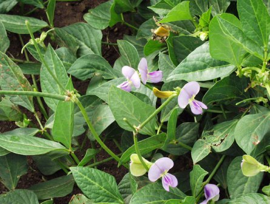
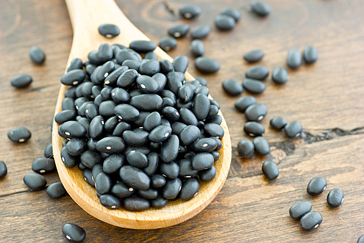

Tên khác
Tên thường dùng: đậu đen,ô đậu, hắc đại đậu, hương xị
Tên tiếng Trung: 黑豆
Tên khoa học:Vigna unguiculata (L., ) Walp subsp, cylindrica (L.) Verdc
Họ khoa học: thuộc họ Ðậu - Fabaceae
Cây đậu đen
(Mô tả, hình ảnh cây đậu đen, phân bố, thu hái, thành phần hóa học, tác dụng dược lý...)
Mô tả

Đậu đen không chỉ là cây lương thực mà còn là một cây thuốc quý. Dạng cây thảo mọc hàng năm, thường đứng, có khi leo, toàn thân không có lông. Lá kép gồm 3 lá chét, mọc so le, có lá kèm nhỏ; lá chét giữa to và dài hơn các lá chét bên. Chùm hoa dài 20-30cm; hoa màu tím nhạt. Quả đậu mọc thẳng đứng hay nghiêng, dài 7- 13cm, chứa 8-10 hạt xếp dọc trong quả, to hơn hạt Ðậu xanh, thường dài 5-6mm.Phân bố, thu hái:
Phân loài này được xem như một nhóm giống trồng (cv. group biflora) chỉ được trồng nhiều ở châu Phi và châu Á. Ðậu đen cùng với nhiều loại đậu khác được trồng, có màu sắc hoa, vỏ quả và hạt khác nhau nhưng đều cùng thuộc phân loài trên. Thuộc nhóm cây Ðậu đen, có các loại Ðậu khác có quả mọc đứng, chứ không thõng xuống như đậu dải.
Ðậu đen có hoa tím, quả hình dải, có hạt nhỏ hình trụ, màu đen, trồng ở Bắc Việt Nam, ở Campuchia, dùng nấu chè và nấu xôi Ðậu đen.
Ðậu đen được trồng phổ biến như Ðậu xanh. Trồng vào mùa hè, thời gian sinh trưởng 80-90 ngày.
Bộ phận dùng:
Hạt của loại có vỏ đen, nhân trắng hoặc xanh (Ðậu đen xanh lòng) - Semen Vignae Unguiculatae. Trong đó loại xanh lòng thì dùng làm thuốc sẽ tốt hơn.
Bào chế
Chế thuốc như nấu với Hà thủ ô làm tăng tác dụng bổ thận thuỷ.
Chế Hàm đậu xị (Ðậu xị muối) và Ðạm đậu xị (Ðậu xị nhạt).
Bảo quản:
Bảo quản nơi khô ráo
Thành phần hoá học:
Hạt chứa 24,2% protid, 1,7% lipid; 53,3% glucid; 2,8% tro; calcium 56mg%, phosphor 354mg%, sắt 6,1mg% caroten 0,06mg%, vitamin B1 0,51mg%, vitamin B2 0,21mg%, vitamin PP 3mg%. Hàm lượng các acid amin cần thiết trong đậu đen rất cao, tính theo g%: lysin 0,97% metionin 0,31%, tryptophan 0,31; phenylalanin 1,1%; alanin 1,09, valin 0,97, leucin 1,26, isoleucin 1,11, arginin 1,72; histidin 0,75. Hạt cũng chứa stigmasterol nên có thể dùng thay được đậu tương.

Vị thuốc đậu đen(Công dụng, liều dùng, tính vị, quy kinh...)
Tính vị:
Ðậu đen có vị ngọt nhạt, tính mát.
Theo " Biệt ký" : vị ngọt, tính bình.
Theo " Y lâm soạn yếu" : vị ngọt, hơi đắng , tính hàn
Tuy nhiên vị đậu đen khi được bào chế với các dược liệu khác nhau thì tính vị của vị thuốc cũng dần được thay đổi, có thể ấm, ngọt hơn hoặc mặn hơn. Vì thế khi sử dụng cần quan trọng việc bào chế.
Quy kinh
– Đắc phối bản thảo: Vào thủ thiếu âm kinh
– Bản thảo tái tân: Vào 3 kinh tâm, tỳ, thận
– Bản thảo toát yếu: Vào thủ túc thiếu âm, quyết âm kinh
Công dụng:
Thường dùng trị phong nhiệt, (phát sốt, sợ gió, Nhức đầu hoặc trong ngực nóng khó chịu), làm thuốc bổ khí, chữa can thận hư yếu, suy nhược, thiếu máu.
Là thuốc giải độc Ban miêu, Ba đậu.
Dùng trong Ðông y để chế thuốc như nấu với Hà thủ ô, làm giảm độc, lại có tác dụng bổ thận thuỷ.
Chế Hàm đậu xị (Ðậu xị muối) và Ðạm đậu xị (Ðậu xị nhạt).
Ngoài ra đậu đen có công năng chữa bệnh nhiệt đối với người ở xứ nóng trong mùa viêm nhiệt, nắng nóng, nên nhân dân ta thích dùng đậu này nấu chè ăn thường trong mùa nóng.
Liều dùng
Liều dùng hàng ngày 20-40g
Ứng dụng lâm sàng của vị thuốc đậu đen
Tuệ Tĩnh, trong Nam dược thần hiệu đã nêu lên một số phương thuốc trị bệnh bằng đậu đen:
Chữa đau bụng dữ dội:
Dùng đậu đen 50g sao cháy sắc với rượu uống hoặc sắc với nước rồi chế thêm rượu vào uống.
Chữa bỗng dưng lưng sườn đau nhức:
Dùng Ðậu đen 200g ngâm rượu uống.
Chữa liệt dương:
Dùng Ðậu đen sao già, đổ rượu vào ngâm uống.
Chữa sau khi đẻ bị trúng gió nguy cấp, hoặc tay chân tê cứng, Chóng mặt sây sẩm:
Dùng Ðậu đen 300g sao cháy đến bốc khói, đổ vào 500ml rượu, ngâm qua 1 ngày, đem uống và đắp chăn cho ra mồ hôi.
Chữa can hư, mắt mờ, ra gió thì chảy nước mắt:
Dùng Ðậu đen đồ lên, chứa vào mật con bò đực, phơi gió cho khô, uống mỗi lần 27 hạt.
Chữa tiêu khát (đái đường) do thận hư:
Dùng Ðậu đen, Thiên hoa phấn, hai vị bằng nhau, tán nhỏ làm viên uống với nước sắc Ðậu đen làm thang.
Trị mắt mờ ở người cao tuổi, nhìn không rõ, hay bị hoa mắt, chóng mặt
Đậu đen 100g, mè đen 100g. Sao khô, tán bột, trộn đều. Mỗi ngày uống 2 lần, mỗi lần 2 thìa cà phê (8g). Uống lâu ngày, mắt dễ chịu hoặc đỡ mờ hơn.
Đậu đen chế hà thủ ô chữa di tinh, liệt dương, tay chân mỏi yếu, râu tóc bạc sớm:
50g đậu đen nấu nước rồi lấy nước đậu chưng cách thủy với 300g hà thủ ô đỏ trong 2 - 3 giờ, vớt ra để ráo phơi khô để dành dùng lâu, dùng dạng nước sắc mỗi ngày 15 - 20g hoặc đem tán bột, mỗi lần uống 5g.
Trị phù thũng do thận hư yếu:
Đậu đen 100g, rễ cỏ tranh 15g. Nấu với 1 lít nước, uống dần trong ngày. Có thể uống lâu dài cho đến khi khỏi bệnh.
Trị chứng viêm gan mạn:
Ngoài những thuốc đặc trị, nên dùng 100g đậu đen nấu lấy nước uống thường xuyên có tác dụng giải được độc tố trong gan ra ngoài.
Ra mồ hôi nhiều do thể trạng suy nhược:
Đậu đen 30g, phù tiểu mạch 30g, đại táo 15g, sắc uống trong ngày. Hoặc đậu đen 60g, hoàng kỳ 30g, sắc uống.
Viêm da lở loét do nhiệt độc hoặc ngộ độc thuốc và thực phẩm:
Đậu đen 30g, cam thảo sống 9g, sắc uống. Tiểu ra máu: đậu đen 30g, đậu xanh 30g, rễ cỏ tranh 30g, sắc uống.
Làm giải rượu:
Uống nước sắc đậu đen càng nhiều càng tốt.
Giải khát, làm hết khô miệng ban đêm:
Đậu đen 80g, lê 1 quả, đường phèn 30g, sắc lấy nước uống hằng ngày.
Chữa phong thấp, gân co gối nhức, trong bụng nóng, đại tiện bón:
Đậu đen ngâm nước, ủ cho mộng dài từ 2 - 3cm rồi phơi khô, dùng 1 thăng rồi cho nửa lạng giấm vào trộn đều, sao vàng tán nhỏ. Mỗi lần uống 1 muỗng nhỏ với rượu trước khi ăn, ngày uống 2 – 3 lần, tác dụng rất hay.
Chữa dị ứng, lở ngứa, mụn nhọt: đậu đen sao nhỏ lửa đến khi ruột bên trong có màu vàng đậm, lấy 50 - 100g nấu uống trong ngày.
Tham khảo
Món ăn bài thuốc chữa bệnh từ đậu đen
Trị đau lưng: đậu đen 100g, giã giập, cho vào ít giấm xào cho nóng lên để âm ấm, đắp vào vùng lung đau, có thể để qua đêm. Hay đậu đen 50g, đuôi heo hoặc đuôi bò 1 cái. Hầm thật nhừ, ăn cả nước lẫn cái.
Mỗi tuần ăn 2 - 3 lần, kết quả khá tốt.
Trị phụ nữ sau khi sinh bị suy yếu, chóng mặt, hoa mắt do mất máu: đậu đen 50g, gà ác 1 con, hầm thật nhừ, ăn cả nước lẫn cái. Mỗi tuần ăn 2 lần, rất mau lại sức.
Rối loạn tiền đình (hay bị chóng mặt): đậu đen 30g, ngải cứu 45g, trứng gà 1 quả. Luộc 3 vị cho tới khi trứng chín. Ăn trứng, uống nước sắc.
Sử dụng đậu đen thế nào cho hiệu quả
Đậu đen là loại hạt cứng nên thưòng được ngâm nước cho mềm trước khi nấu. Nuốt sống đậu đen thường có mùi vị khó nuốt, lại có thể nguy hiểm cho những người tiêu hoá kém, viêm loét dạ dày, hoặc trẻ nhỏ hạt đậu đi lạc đường thở gây ngạt. Vì thế chúng ta khi sử dụng có thể dùng các cách truyền thống như nấu chè, độn cơm, làm tương, làm bánh đều có thể miễn khi sử dụng cần dùng đậu đen toàn phần, cả vỏ đen bên ngoài.
Ngoài ra, theo những nghiên cứu tại trường Đại học Minnesota, quá trình nẩy mầm làm gia tăng tỷ lệ dinh dưỡng trong tất cả các loại hạt. Do đó, nên ngâm đậu vào trong nước thường khoảng 32oC trong khoảng 22 giờ trước khi nấu để cho hạt nẩy mầm để có thể đạt được hiệu quả tốt nhất.
Đậu đen kỵ những thực phẩm gì
Thịt bò: Thịt bò giàu chất sắt thường được dùng để bổ máu, nhưng khi ăn cùng đậu đen sắt sẽ bị giảm hấp thu một cách nghiêm trọng. Bởi lẽ trong đậu đen rất giàu chất xơ thô, to khiến giảm hấp thu sắt. Để tránh tình trạng này các chuyên gia khuyên bạn nên ăn 2 loại thức phẩm này cách nhau ít nhất 4 giờ.
Một số bài thuốc có đậu đen làm chủ:
Hắc đậu thang (thẩm thị tôn sinh thư) Trị các chứng ngộ (trúng) độc, phụ nữ có thai bị phù
Cam thảo Hắc đậu thang (y phương tập thành) giải các loại thuốc độ
Tang Ký Sinh Hắc Đậu Tửu (Nghiệm Phương) : Thông kinh hoạt lạc, chỉ thống. Trị sản hậu bị trúng phong, lưng đau, lưỡi cứng.
Tang diệp Hắc đậu thang (nghiệm phương): trị mất ngủ mãn tính
Nơi mua bán vị thuốc đậu đen
Đậu đen là một loại thực phẩm quen thuộc, khách hàng có thể mua đậu đen tại các chợ, siêu thị, tại địa phương mình sinh sống. Nên lựa chọn mua tại các cửa hàng uy tín, có chất lượng.
Tag: cay dau den, vi thuoc dau den, cong dung dau den, Hinh anh cay dau den, Tac dung dau den, Dau den giam can, che dau den
Nơi mua bán vị thuốc Ðậu đen đạt chất lượng ở đâu?
Trước thực trạng thuốc đông dược kém chất lượng, nguồn gốc không rõ ràng,... xuất hiện tràn lan trên thị trường, làm ảnh hưởng tới hiệu quả điều trị cũng như ảnh hưởng tới sức khỏe của bệnh nhân. Việc lựa chọn những địa chỉ uy tín để mua thuốc đông dược là rất quan trọng và cần thiết. Vậy khách hàng có thể mua vị thuốc Ðậu đen ở đâu?
Ðậu đen là vị thuốc nam quý, được sử dụng rộng rãi trong YHCT. Hiện tại hầu hết các cửa hàng thuốc đông dược, phòng khám đông y, phòng chẩn trị YHCT... đều có bán vị thuốc này. Tuy nhiên người mua nên chọn những địa chỉ có uy tín, đảm bảo chất lượng, có giấy phép hoạt động để mua được vị thuốc đạt chất lượng.
Với mong muốn bệnh nhân được sử dụng những loại dược liệu đúng, chất lượng tốt, phòng khám Đông y Nguyễn Hữu Toàn không chỉ là đia chỉ khám chữa bệnh tin cậy, uy tín chất lượng mà còn cung cấp cho khách hàng những vị thuốc đông y (thuốc nam, thuốc bắc) đúng, chuẩn, đạt chuẩn chất lượng. Các vị thuốc có trong tiêu chuẩn Dược điển Việt Nam đều được nghành y tế kiểm nghiệm đạt chất lượng tiêu chuẩn.
Vị thuốc Ðậu đen được bán tại Phòng khám là thuốc đã được bào chế theo Tiêu chuẩn NHT.
Giá bán vị thuốc Ðậu đen tại Phòng khám Đông y Nguyễn Hữu Toàn: Gọi 18006834 để biết chi tiết
Tùy theo thời điểm giá bán có thể thay đổi.
+ Khách hàng có thể mua trực tiếp tại địa chỉ phòng khám: Cơ sở 1: Số 481 lô 22 Lê Hồng Phong, Phường Gia Viên, Thành phố Hải Phòng
+ Mua trực tuyến: Thuốc được chuyển qua đường bưu điện. Khi nhận được thuốc khách hàng thanh toán tiền COD.
Tag: cay dau den, vi thuoc dau den, cong dung dau den, Hinh anh cay dau den, Tac dung dau den, Thuoc nam
Thaythuoccuaban.com Tổng hợp
*************************